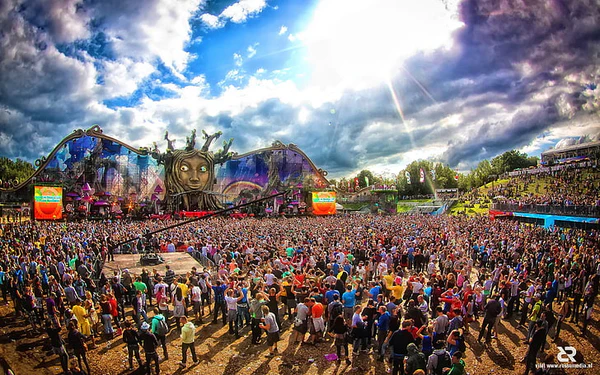
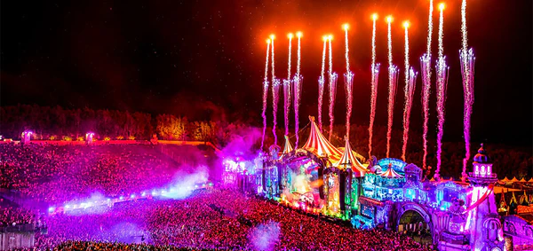

Galleri för Tomorrowland
Videoklipp från Tomorrowland
Källa: klicka här
Källa: klicka här
Källa: klicka här
Olika musikgenrer på Tomorrowland
Tomorrowland erbjuder olika sorters genrer utav elektonisk musik. Nedan kan du lyssna några utav de olika stilarna:
-
HARDSTYLE
Denna ljudfil är lånad från denna härifrån: Abaddon, CC BY-SA 3.0, via Wikimedia Commons
-
TECHNO
Denna ljudfil är lånad från denna härifrån: Luisalvaz, CC0, via Wikimedia Commons
-
TRANCE
Denna ljudfil är lånad från denna härifrån: Dream Vilanculos, CC BY-SA 4.0, via Wikimedia Commons
Bilder från Tomorrowland

Källa: klicka här
Källa: klicka här
 
Källa: klicka här